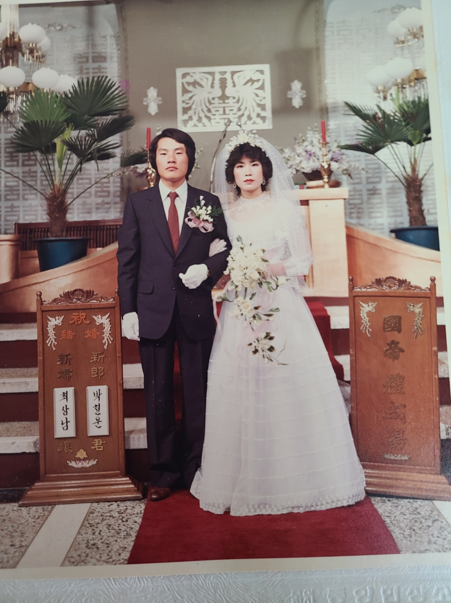
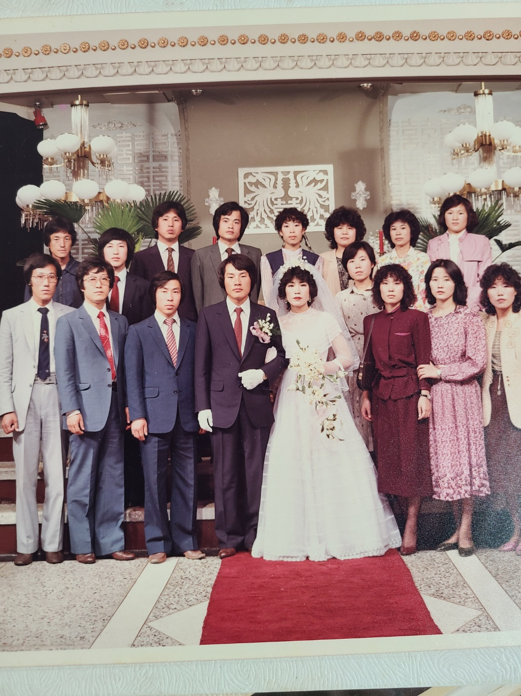
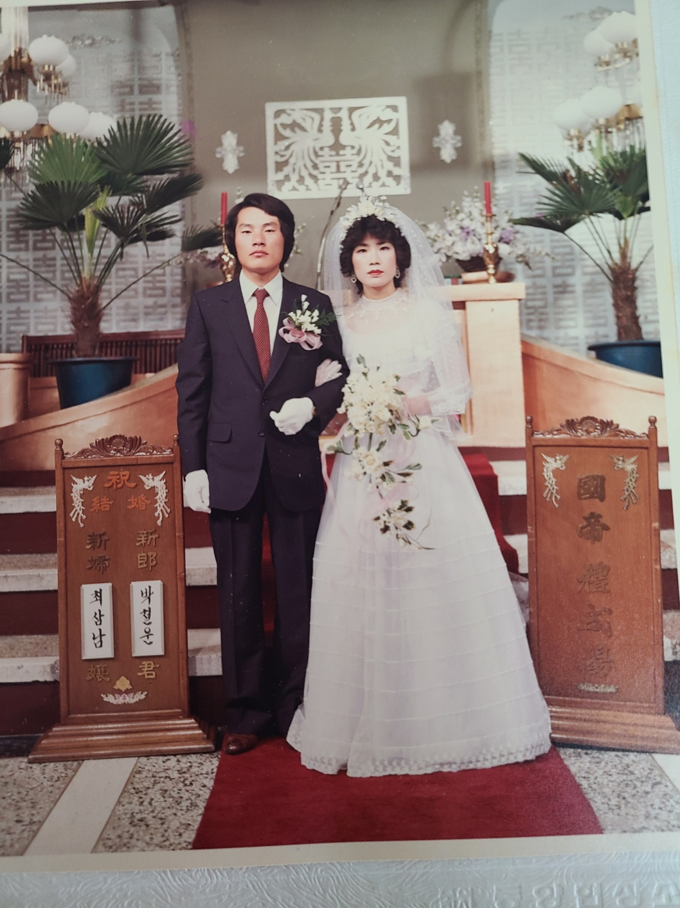
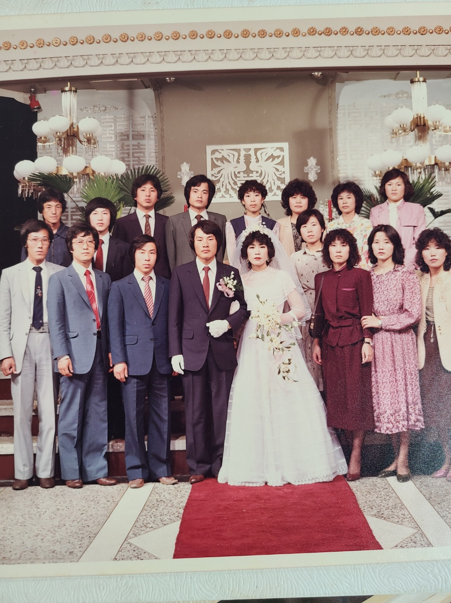

부부란 무엇인가? 부부는 선택이 아니고 필수이며, 부부의 소중함은 물론 부부는
생명의 원천이고, 인간의 행복과 불행의 씨앗이다, 부부에 대한 의무와 책임과 선택은
각자의 몫이며 그 결과 또한 각자의 책임이다.
부부의 희망이 역사와 미래를 만드는
것임을 기억하기 바란다. 특히 오늘날처럼 가정의 소중함이 절실히 느껴지는 지금이야말로
가정의 기본조건이 부부의 중요성과 필요성을 깨닫는 것이다.
부부는 가정과 사회와 국가발전과
행복의 원천이며 모두가 행복한 아름다운 세상을 만드는 원동력이라는 사실을 다함께 인식하고
모든 부부가 행복할 수 있도록 다함께 노력해야 한다. 그것이 자신과 가족과 이웃을 위하는
길이라 단언한다.


Copy (Recommended) Edit the RECOMMENDED CONFIGURATION VARIABLES section using your CMS or platform's dynamic values. See our documentation to learn why defining identifier and url is important for preventing duplicate threads. How to display comment count Place the following code before your site's closing